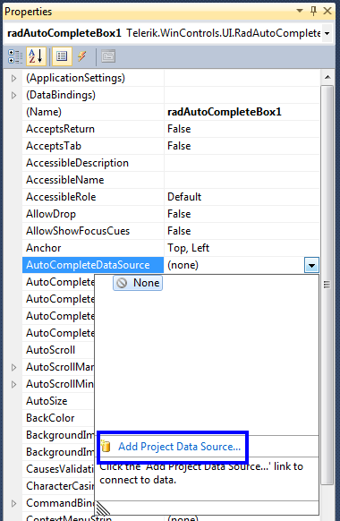

Auto-Complete
The RadAutoCompleteBox can automatically complete the input string by comparing
the prefix being entered to the prefix of all strings in the maintained source.
This is useful for RadAutoCompleteBox in which URLs, addresses, file names or commands
will be frequently entered.
There are four different completion modes:
Append - Appends the remainder of the most likely candidate
string to the existing characters, highlighting the appended characters.None - disables the automatic completion feature.
Suggest - Displays the auxiliary drop-down list associated
with the edit control. This drop-down is populated with all matching completion strings.SuggestAppend - Applies both Suggest and Append options.
You can change the completion behavior by setting the AutoCompleteMode property.
You can determine the items used for auto-completion by specifying a data source
or adding the items manually.
Auto-completion data binding
RadAutoCompleteBox binds to collections of bindable types from many sources including:
Array and ArrayList of simple types or custom objects.
Generic Lists of simple types or custom objects.
BindingList or other IBindingList implementations.
Database data using DataTable and DataSet from a wide range of providers (MS SQL, Oracle, Access, anything accessible through OleDb).
Three properties control data binding:
The AutoCompleteDataSource property specifies the source of the data to be bound.
The AutoCompleteDisplayMember property specifies the particular data to be displayed in the auto-completion drop down.
The AutoCompleteValueMember property specifies the particular data to be returned as the value of the tokenized block element.
To set the AutoCompleteDataSource property, select the AutoCompleteDataSource property
in the Properties window of Visual Studio, click the drop-down arrow to display all
existing data sources on the form. Click the Add Project Data Source link and follow
the instructions in the Data Source Configuration Wizard to add a data source to your
project. You can use databases, web services, or objects as data sources.

AutoCompleteDisplayMember: To set the
AutoCompleteDisplayMember property, first set the data source property.
Then, select a value for the AutoCompleteDisplayMember property from
the drop-down list in the Properties window.
AutoCompleteValueMember: To set the
AutoCompleteValueMember property, first set the
AutoCompleteDataSource property. Then, select a value for the
AutoCompleteValueMember property from the drop-down list in the Properties window.
Auto-completion in unbound mode
To use auto-completion without specifying a data source, you need to populate
the items which will be used for completing the input string in RadAutoCompleteBox,
in the Items collection of the control:
[C#]
private void AddAutoCompleteItems()
{
RadListDataItemCollection items = this.radAutoCompleteBox1.AutoCompleteItems;
items.Add(new RadListDataItem("Joe Smith", "joe@fakecompany.com"));
items.Add(new RadListDataItem("Adam Petersen", "adam@qwerty.com"));
items.Add(new RadListDataItem("Jack Russel", "jack@russel.nocom"));
items.Add(new RadListDataItem("Daniel Finger", "daniel.pinger@gmail.com"));
items.Add(new RadListDataItem("Richard Vail", "rvail@richardvail.com"));
items.Add(new RadListDataItem("Sebastian Jonnson", "s.jonnson@sjonnson.com"));
items.Add(new RadListDataItem("Lee Cooper", "lee.cooper@coopercoorp.com"));
items.Add(new RadListDataItem("Kelvin Clain", "kclain@clainkevin.com"));
items.Add(new RadListDataItem("Maria Jenson", "mjenson@mariajenson.com"));
items.Add(new RadListDataItem("Chelsea Maarten", "chelsea@maarten.com"));
items.Add(new RadListDataItem("Jenson Chew", "jenson.chew@nospam.com"));
items.Add(new RadListDataItem("Martin Williams", "m.williams@martinandwilliams.com"));
items.Add(new RadListDataItem("Telerik", "clientservice@telerik.com"));
items.Add(new RadListDataItem("James Stone", "james.stone@manystones.com"));
items.Add(new RadListDataItem("Samuel Jackson", "samuel.jackson@nojackson.com"));
}
[VB.NET]
Private Sub AddAutoCompleteItems()
Dim items As RadListDataItemCollection = Me.RadAutoCompleteBox1.AutoCompleteItems
items.Add(New RadListDataItem("Joe Smith", "joe@fakecompany.com"))
items.Add(New RadListDataItem("Adam Petersen", "adam@qwerty.com"))
items.Add(New RadListDataItem("Jack Russel", "jack@russel.nocom"))
items.Add(New RadListDataItem("Daniel Finger", "daniel.pinger@gmail.com"))
items.Add(New RadListDataItem("Richard Vail", "rvail@richardvail.com"))
items.Add(New RadListDataItem("Sebastian Jonnson", "s.jonnson@sjonnson.com"))
items.Add(New RadListDataItem("Lee Cooper", "lee.cooper@coopercoorp.com"))
items.Add(New RadListDataItem("Kelvin Clain", "kclain@clainkevin.com"))
items.Add(New RadListDataItem("Maria Jenson", "mjenson@mariajenson.com"))
items.Add(New RadListDataItem("Chelsea Maarten", "chelsea@maarten.com"))
items.Add(New RadListDataItem("Jenson Chew", "jenson.chew@nospam.com"))
items.Add(New RadListDataItem("Martin Williams", "m.williams@martinandwilliams.com"))
items.Add(New RadListDataItem("Telerik", "clientservice@telerik.com"))
items.Add(New RadListDataItem("James Stone", "james.stone@manystones.com"))
items.Add(New RadListDataItem("Samuel Jackson", "samuel.jackson@nojackson.com"))
End Sub
#End Region
#Region "replaceTokens"
Private Sub radAutoCompleteBox1_CreateTextBlock(sender As Object, e As CreateTextBlockEventArgs)
If TypeOf e.TextBlock Is TokenizedTextBlockElement Then
e.TextBlock = New MyTokenizedTextBlockElement()
End If
End Sub
#End Region
#Region "customTokens"
Public Class MyTokenizedTextBlockElement
Inherits TokenizedTextBlockElement
Private checkBox As RadCheckBoxElement
Protected Overrides ReadOnly Property ThemeEffectiveType() As Type
Get
Return GetType(TokenizedTextBlockElement)
End Get
End Property
Protected Overrides Sub CreateChildElements()
MyBase.CreateChildElements()
Dim index As Integer = Me.Children.IndexOf(Me.RemoveButton)
Me.checkBox = New RadCheckBoxElement()
Me.checkBox.StretchVertically = True
Me.checkBox.StretchHorizontally = False
Me.Children.Insert(index, Me.checkBox)
End Sub
End Class
#End Region
End Class
Here is the result of the above code: